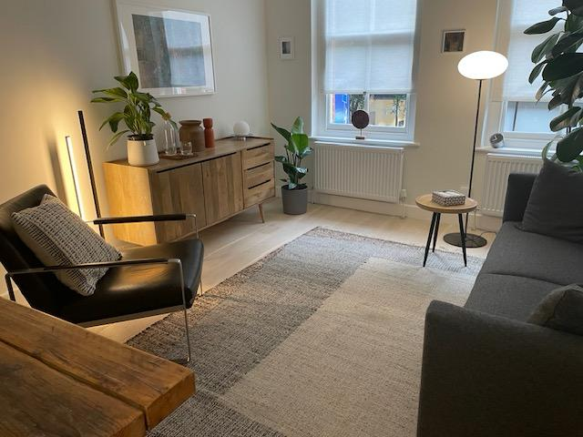
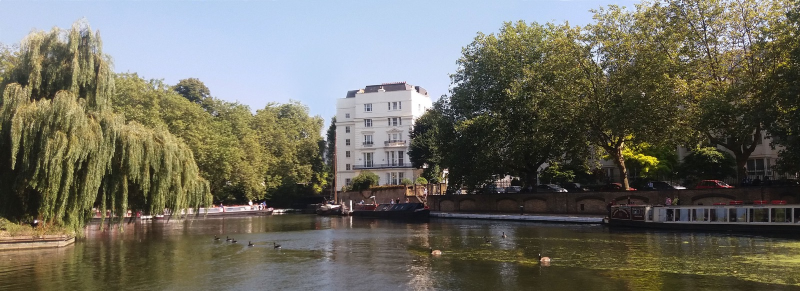
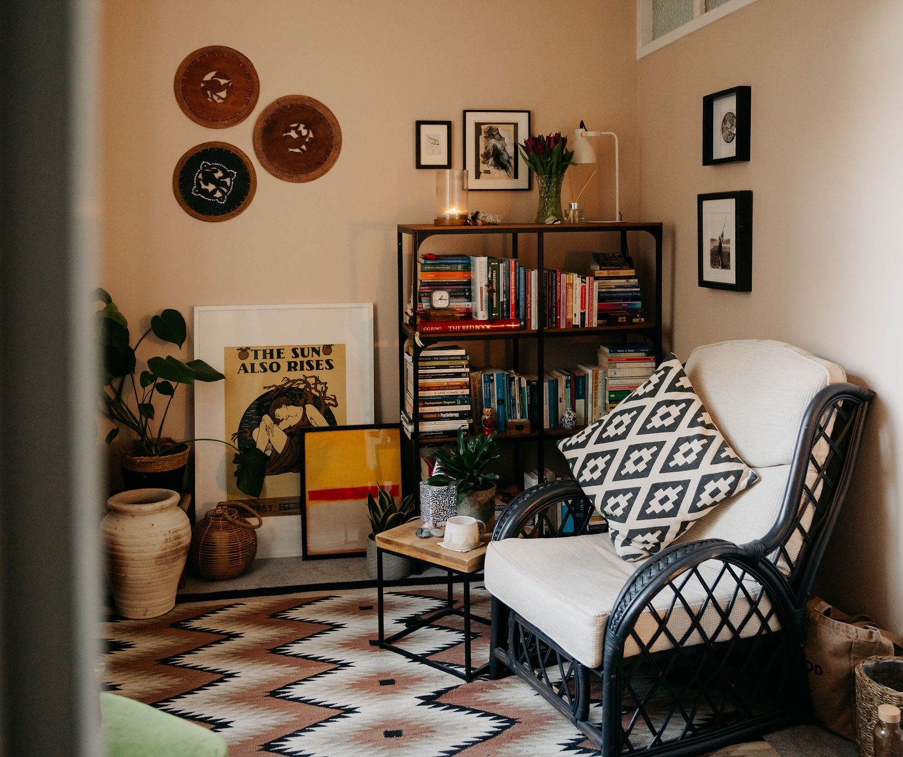

Welcome
In a world that's always on the move, it feels like we're just about keeping up. The everyday pulls our attention and it's no surprise we feel disconnected or stuck in a loop. Life has a way of throwing us around, whilst not being sure where we're headed. We can lose connection to what's true and important.
I offer sanctuary. A place to pause, exhale and take the weight off, to gently untangle what is in front of us and reclaim your inner compass.
Connecting back to ourselves is essential in uncovering what truly needs tending to. From here potential can be found, opening up to fresh possibility and a new direction.
My Approach
As an integrative psychotherapist I have trained in different approaches such as transpersonal, psychodynamic, humanistic and existential methods. This allows me to work intuitively and adapt to meet your unique needs, enabling us to work with whatever arises.
I believe therapy is relational and I encourage a collaborative process of careful listening and supportive dialogue. By working towards a secure foundation of trust and safety, unconscious patterns and self-limiting beliefs can move into the light to be witnessed and processed. Our work together will help cultivate an inner guidance for you to take out into your life and relationships.
Transpersonal means that my approach is holistic; bringing the body, mind and soul in harmony to accomplish healing and growth. If sometimes language evades us, we can work with creative expression, dreams and mindfulness to create breakthroughs. This can mean listening to the body or checking in with the senses whilst we work, connecting with what is true and authentic.
Whatever the issue, I aim to walk alongside you to uncover your concerns, untangle what is stuck and be there to witness and celebrate your progress.
Areas I Work With
- Childhood Trauma
- Attachment Trauma and Emotional Neglect
- PTSD and Complex PTSD (C-PTSD)
- Domestic Abuse and Coercive Relationships
- Anxiety and Social Anxiety
- Depression
- Low Self-Esteem and Self-Worth
- Relationship Difficulties and Co-dependency
- Bereavement, Grief and Loss
- Identity, Culture and Belonging
- Mixed and Multi-Heritage Identity
- Neurodivergence (ADHD and Autism)
- Workplace Stress, Burnout and Corporate Disillusionment
- Midlife Transition and Life Changes
- Perimenopause and Menopause
- Spiritual Crisis and Spiritual Emergence
- Psychedelic Integration
About Me
After studying Psychology at Leeds University, I spent 20+ years in the fashion retail industry, leading large teams in creative and project management. The corporate world delivered success but also chronic exhaustion and disillusionment. My path up to that point had always brought personal struggle and inner turmoil and I continued to chase answers in the wrong places.
I eventually embarked on a journey of discovery through a blend of therapy, deep shamanic work, meditation, Buddhist and tantra practice. These methods have supported me to turn inward and heal, becoming sacred practices to integrate into my work as a therapist.
My formal training is in integrative and transpersonal psychotherapy and counselling; receiving a Post-Graduate diploma at the Centre of Counselling and Psychotherapy Education (CCPE). I am an accredited member of the UKCP.
Additionally, I have specialised training in trauma support, particularly for individuals who have endured emotional, physical, or sexual abuse during childhood.
Professional Training
- Five-Year Postgraduate Diploma (Dip Psych) in Counselling and Psychotherapy
- UKCP Accredited Psychotherapist
- Registered member of BACP (MBACP)
- Certificate in Embodied Psychotherapy (currently undertaking)
- Certificate in the Foundations of Counselling and Psychotherapy
- B.A. (Hons) Psychology, Leeds
I believe that personal development is a lifelong process. Alongside supervision and professional training, I continue to engage in my own therapeutic and reflective work, which deepens my self-awareness and informs my practice as a psychotherapist.

Fees & availability
Sessions are offered on a sliding scale of £80–£100, depending on income and location. This applies to both face to face and virtual sessions.
I offer a free initial 20 minute exploratory session. A limited amount of low cost slots are available.
My location
In addition to virtual sessions, my in person practice locations include:
- London, Brick Lane E1
- London, Paddington W2
- Margate



Confidential
My consulting rooms offer quiet, private and confidential spaces, away from the hustle and bustle of everyday life. A calm environment where you can feel comfortable, safe and at ease.
Accessible
All consulting rooms are located within a five-minute walk of a tube or train station, making them easy to reach by public transport. Disabled access is available at the Paddington location.
FAQs
I want to get in touch, so what happens next?
Send me an email and let me know if you are seeking online, or face to face sessions - along with the preferred location. We can then organise a 20-minute introductory Zoom session. This serves as an opportunity for us to explore why you are seeking therapy, how it would be helpful and to gauge if I am a good fit for you.
How long is a typical therapy session, and how often should sessions occur?
Therapy sessions typically last 50 minutes and are ideally scheduled once a week.
How is the progress of therapy reviewed?
We will regularly review the progress of therapy sessions together. It's entirely up to you to decide the number of sessions you feel you need. Therapy can last anywhere from a few weeks to several years based on individual requirements.
Feel free to contact me
To explore more about therapy, inquire about sessions, or schedule a consultation, feel free to reach out via the contact form.